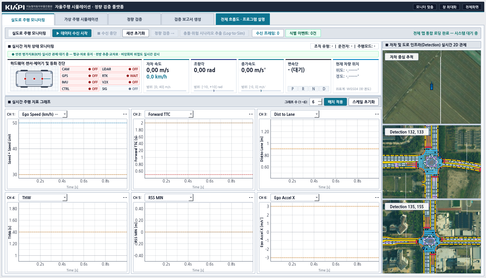
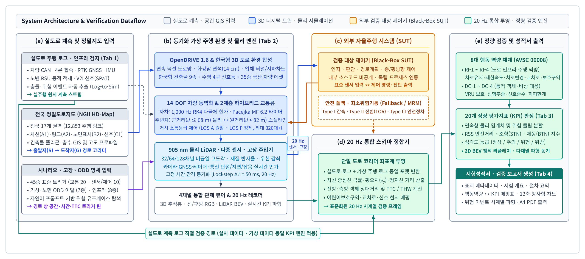

통합 화면 구성 및 검증 워크플로우 (UI & Workflow)
실도로 주행 모니터링(Tab 1), 가상 주행 시뮬레이션(Tab 2), 정량 검증(Tab 3), 검증 보고서 생성(Tab 4)의 4개 메인 탭과 독립 3D 관제 모니터의 기능 및 데이터 연동 구조를 설명합니다.
1. 메인 4-Tab 화면 역할 분담
메인 프로그램은 시험·검증 단계에 따라 4개의 독립 탭으로 구성되며, 각 탭의 세부 컨트롤과 조작 절차는 개별 매뉴얼 문서에서 다룹니다.

Tab 1 [실도로 주행 모니터링]: 실차·RSU 주행 로그 관제 및 상충 구간 추출 (매뉴얼 보기)
![Tab 2 [가상 주행 시뮬레이션]: 경로 기반 3D 월드 생성 및 시나리오·고장 주입 (매뉴얼 보기)](../assets/img/ui/ui_tab2_workbench.png)
Tab 2 [가상 주행 시뮬레이션]: 경로 기반 3D 월드 생성 및 시나리오·고장 주입 (매뉴얼 보기)
![Tab 3 [정량 검증]: 20-KPI 적부 판정 및 2D 궤적·파형 동기화 분석 (매뉴얼 보기)](../assets/img/ui/ui_tab3_evaluation.png)
Tab 3 [정량 검증]: 20-KPI 적부 판정 및 2D 궤적·파형 동기화 분석 (매뉴얼 보기)
![Tab 4 [검증 보고서 생성]: 챕터별 결과 차트 구성 및 시험성적서 PDF 출력 (매뉴얼 보기)](../assets/img/ui/ui_tab4_export.png)
Tab 4 [검증 보고서 생성]: 챕터별 결과 차트 구성 및 시험성적서 PDF 출력 (매뉴얼 보기)
2. 탭 간 연동 워크플로우 및 20 Hz 정합 스키마

그림 1. 실도로 계측 로그(Tab 1)와 가상 시뮬레이션 로그(Tab 2)의 단일 20 Hz 스키마 정합, 외부 검증 대상 제어기(Black-Box SUT) 폐루프 연동, 그리고 8대 행동역량·20-KPI 판정 및 성적서 출력 데이터 흐름도.
- 실도로 주행 로그 직접 검증 (Tab 1 → Tab 3 → Tab 4):
실차 주행 세션이나 CSV 기록을 Tab 1에서 점검한 뒤
[정량 검증 →]으로 Tab 3에 전달하여 20개 KPI 적부 판정 및 PDF 성적서를 생성합니다. - 실도로 상충 이벤트 가상 재현 (Tab 1 Log-to-Sim → Tab 2 → Tab 3 → Tab 4): Tab 1에서 다중 객체 상충 구간을 추출하여 Tab 2의 동일 도로 위치에 배치함으로써, 제어기 수정 전·후 거동을 가상환경에서 반복 비교합니다(추출 조건은 Tab 1 매뉴얼 참조).
- 가상 시나리오·고장 주입 검증 (Tab 2 → Tab 3 → Tab 4):
실차 시험이 어려운 급끼어들기·센서 고장·기상 악화 조건을 Tab 2에서 인가해 주행하면 전 구간이 실도로 로그와 동일한
20 Hz (50 ms)표준 컬럼 규격으로 저장되어 Tab 3·Tab 4에서 동일한 수식으로 채점됩니다.
3. 제어 UI와 3D 관제 모니터의 비동기 분리 구조
고해상도 다채널 영상과 실시간 파형 그래프를 메인 4-Tab 설정 창 내부에서 함께 렌더링하면 UI 이벤트 처리 지연이 시뮬레이션 틱 주기(20 Hz)에 간섭을 줄 수 있습니다. 이를 방지하기 위해 3D 시뮬레이션·센서·예측 뷰어는 별도 프로세스 창([Pygame 창])으로 분리되어 동작하며, 공유메모리 기반 최신 프레임 버퍼를 통해 시뮬레이션 물리·로깅 주기와 독립적으로 화면을 갱신합니다.
분리된 3D 관제 모니터의 화면 레이아웃([1]~[4]), 5개 뷰포트 기호, 하단 통합 진단 콘솔 및 23종 스코프 신호 사용법은 Tab 2 매뉴얼 3절(독립 5채널 3D 관제 모니터 상세 가이드)에 수록되어 있습니다.